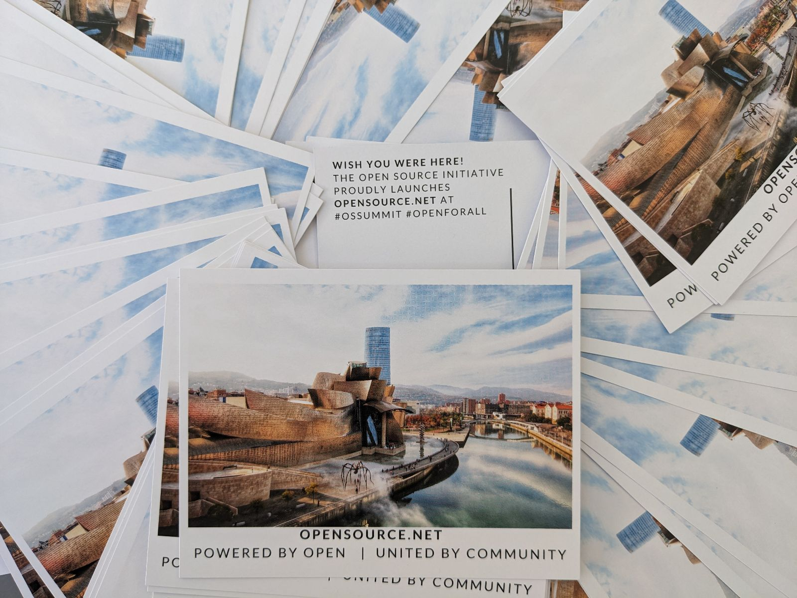

Unpacking Open Source Compliance
Open source compliance refers to adherence to policies related to the use of open source software. These policies may be internal and enforced by an organization's IT security team, or externally mandated by an outside source.

Three highlights from Open Source Summit Europe 2023
The Open Source Summit Europe is a conference organized by the Linux Foundation with the goal of bringing together Open Source developers, technologists and community leaders to collaborate and gain knowledge.

Opensource.com Community Finds New Life With the Open Source Initiative
Open Source enthusiasts have grown to rely on unbiased, community-led content.